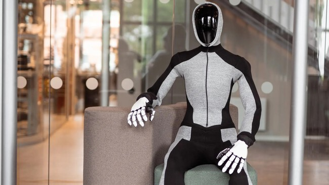
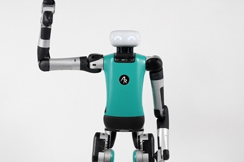
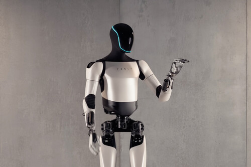
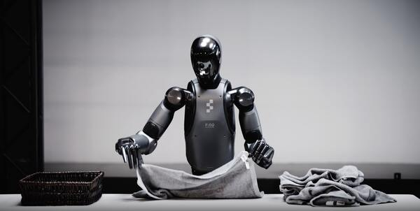
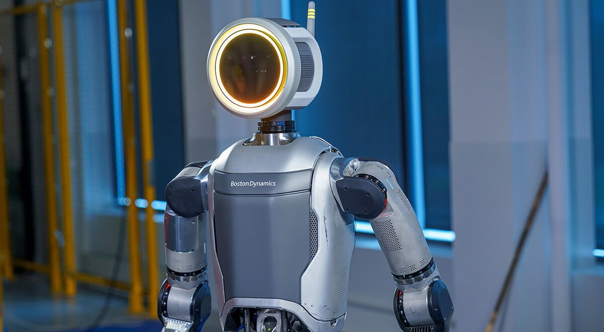
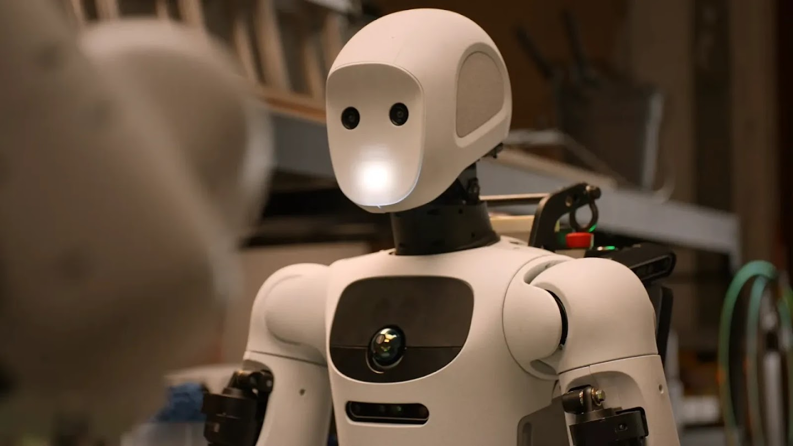
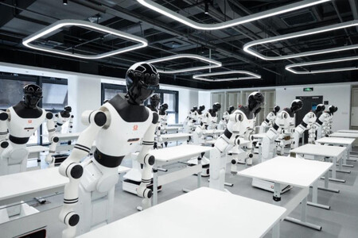
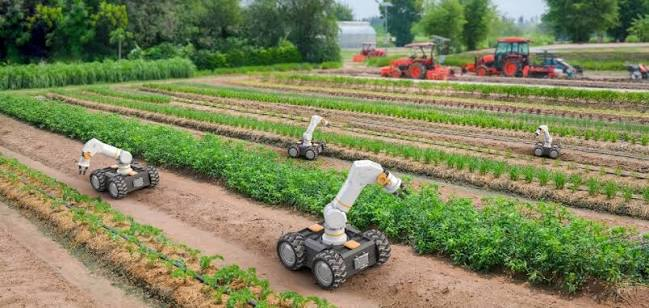
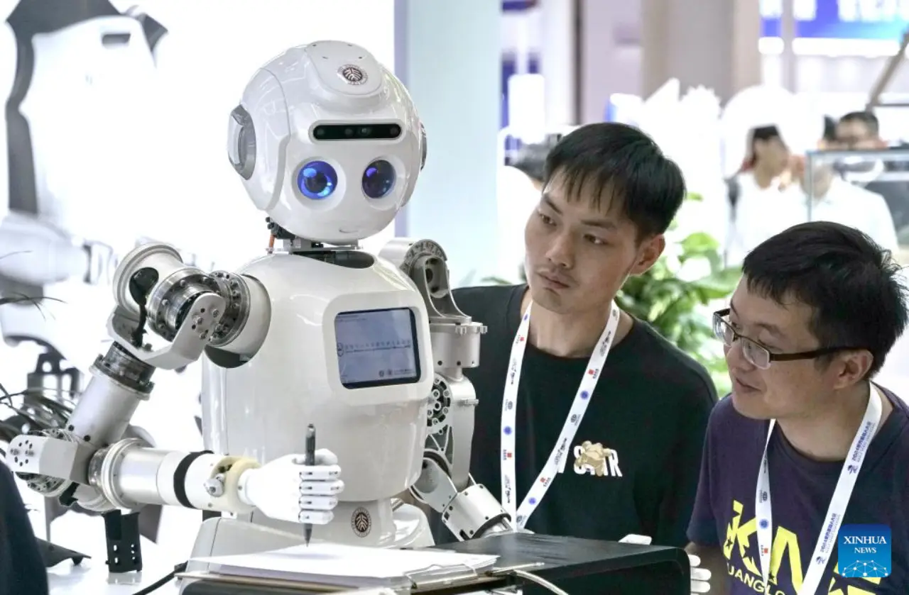

1. NEO Beta - Noruega
Lugar: Noruega, con pruebas también en Estados Unidos.
Empresa: 1X Technologies.
Inicio: 2024.
NEO Beta busca desarrollar un robot humanoide para ambientes domésticos. Fue presentado por 1X como una plataforma experimental para probar robots dentro de hogares reales.
El robot debe desplazarse entre muebles, reconocer objetos y adaptarse a situaciones cambiantes. Combina cámaras, sensores, sistemas de control e inteligencia artificial.
Estado actual
Está en etapa de desarrollo y pruebas. Todavía no puede realizar cualquier tarea doméstica de forma completamente autónoma.

2. Digit - Estados Unidos
Lugar: Estados Unidos.
Empresa: Agility Robotics.
Inicio: aproximadamente 2019.
Digit es un robot humanoide diseñado para ambientes industriales y de logística. Puede caminar sobre dos piernas y transportar objetos.
Sus sensores, motores, cámaras y software coordinan el desplazamiento y la manipulación de objetos en depósitos y fábricas.
Estado actual
Ya fue probado en ambientes de trabajo reales, especialmente en logística, aunque continúa en desarrollo y perfeccionamiento.

3. Optimus - Estados Unidos
Lugar: Estados Unidos.
Empresa: Tesla.
Presentación: 2021.
Optimus es el robot humanoide desarrollado por Tesla para realizar determinadas tareas físicas y repetitivas.
El proyecto investiga el equilibrio, la locomoción, la manipulación de objetos, la percepción visual y el control mediante inteligencia artificial.
Estado actual
Continúa en desarrollo. Se realizaron demostraciones y pruebas, pero sus capacidades todavía están siendo perfeccionadas.

4. Figure AI - Estados Unidos
Lugar: Estados Unidos.
Empresa: Figure AI.
Inicio: 2022.
Figure AI desarrolla robots humanoides capaces de realizar diferentes actividades físicas. Busca combinar el movimiento humanoide con inteligencia artificial avanzada.
Sus cámaras, sensores de movimiento y modelos de inteligencia artificial permiten interpretar instrucciones y aprender diferentes tareas.
Estado actual
Sus robots se encuentran en pruebas y demostraciones industriales mientras la empresa desarrolla su percepción, movimiento y aprendizaje.

5. Atlas - Estados Unidos
Lugar: Estados Unidos.
Empresa: Boston Dynamics.
Inicio: 2013.
Atlas es un conocido proyecto de robótica humanoide. Originalmente fue una plataforma de investigación sobre movilidad, equilibrio y desplazamiento.
Con el tiempo, el proyecto se orientó también a aplicaciones industriales, donde debe desplazarse y manipular objetos manteniendo movimientos precisos y coordinados.
Estado actual
Continúa en desarrollo y pruebas, especialmente para aplicaciones industriales.

6. Gemini Robotics - Estados Unidos
Lugar: Estados Unidos.
Empresa: Google DeepMind.
Presentación: 2025.
Gemini Robotics es una línea de investigación cuyo objetivo es desarrollar inteligencia artificial capaz de controlar y comprender sistemas robóticos.
El sistema puede interpretar instrucciones, analizar objetos mediante cámaras y sensores y determinar una secuencia de acciones para completar una tarea.
Estado actual
Está en investigación y desarrollo, con modelos probados en diferentes plataformas robóticas.

7. Robots humanoides en China
Lugar: China.
Participantes: empresas, universidades y organizaciones tecnológicas.
Desarrollo: acelerado durante la década de 2020.
China se convirtió en uno de los principales centros mundiales de investigación y producción de robots humanoides.
Se desarrollan máquinas capaces de caminar, correr, mantener el equilibrio, transportar objetos y realizar diferentes movimientos. Las competiciones permiten evaluar su coordinación, velocidad y limitaciones.
Estado actual
Existen numerosos prototipos y robots experimentales. Algunos llegan a ambientes industriales, aunque la tecnología sigue en desarrollo.

8. Robótica agrícola
Lugares: Estados Unidos, Japón, Europa, Australia y otros países.
Desarrollo: proyectos comerciales e investigación desde aproximadamente 2010.
Se desarrollan robots capaces de desplazarse por campos usando cámaras, GPS, sensores e inteligencia artificial.
Algunos identifican plantas, analizan cultivos, detectan malezas o ayudan en la recolección. Deben adaptarse a terrenos irregulares, barro, lluvia y obstáculos inesperados.
Estado actual
Existen prototipos y sistemas comerciales especializados que realizan tareas concretas.

9. Robots médicos
Lugares: Estados Unidos, Japón, Europa, China y otros países.
Desarrollo: desde finales del siglo XX, con avances importantes desde 2000.
La robótica médica utiliza sistemas de asistencia para determinados procedimientos y desarrolla robots para rehabilitación, movimiento y transporte de materiales hospitalarios.
La precisión y la seguridad son fundamentales: los robots médicos necesitan movimientos controlados y sistemas rigurosos de protección.
Estado actual
Algunos sistemas ya se utilizan en hospitales y otros continúan en investigación y pruebas.